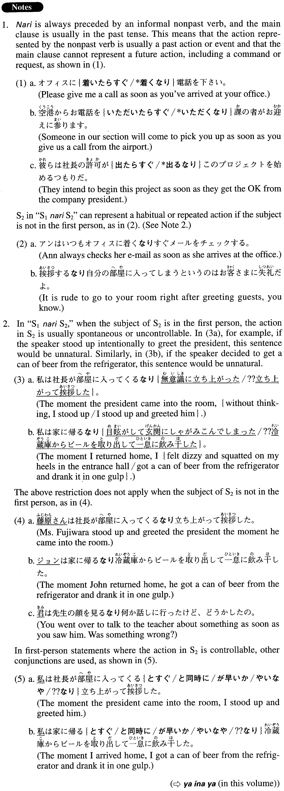

←
DoJG
→
なり
(A. 355)
Example sentences
(ks).
妻は私の顔を見る
なり
泣き出した。
My wife began to cry the moment she saw me (literally: my face).
(a).
首相は会議場を出る
なり
記者団の質問攻めにあった。
The prime minister was bombarded with questions by a group of reporters soon after he left the conference hall.
(b).
部屋に入る
なり
ルームサービスの人がお茶とお菓子を持ってきてくれた。
No sooner had we entered our room than room service brought tea and sweets.
(c).
編集長は私と顔を合わせる
なり
私をにらみつけ、「話がある」と言った。
The chief editor glared at me when she saw me, and told me that we needed to talk.
(d).
家に帰るまで何とかもつかと思ったが、バスを降りる
なり
激しい雨が降り出した。
I thought the weather would hold somehow until I got home, but as soon as I stepped off the bus, it started pouring.
(e).
会議中タバコが吸えなくて禁断症状だった伊藤さんは、部屋を出る
なり
タバコに火をつけた。
Mr. Ito, who had shown withdrawal symptoms during the meeting because he was not allowed to smoke, lit a cigarette as soon as he got out of the room.
(f).
そのニュースが報道される
なり
、放送局に問い合わせの電話が殺到した。
Soon after the news was reported, phone queries flooded the broadcast centre.
(g).
所属レコード会社が宣伝に力を入れたため、そのアルバムは発売される
なり
ヒットチャート1位になった。
Because the recording company made an effort to promote the album, it became No. 1 in the hit charts soon after it was released.
Formation
Vinformal nonpast
なり
知らせを聞く
なり
As soon as someone heard the news
